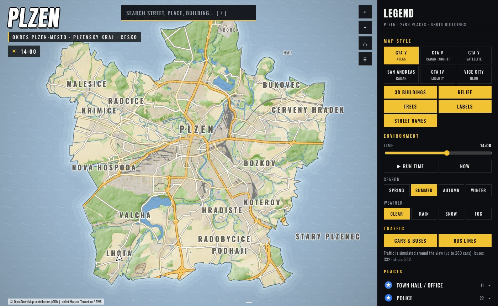
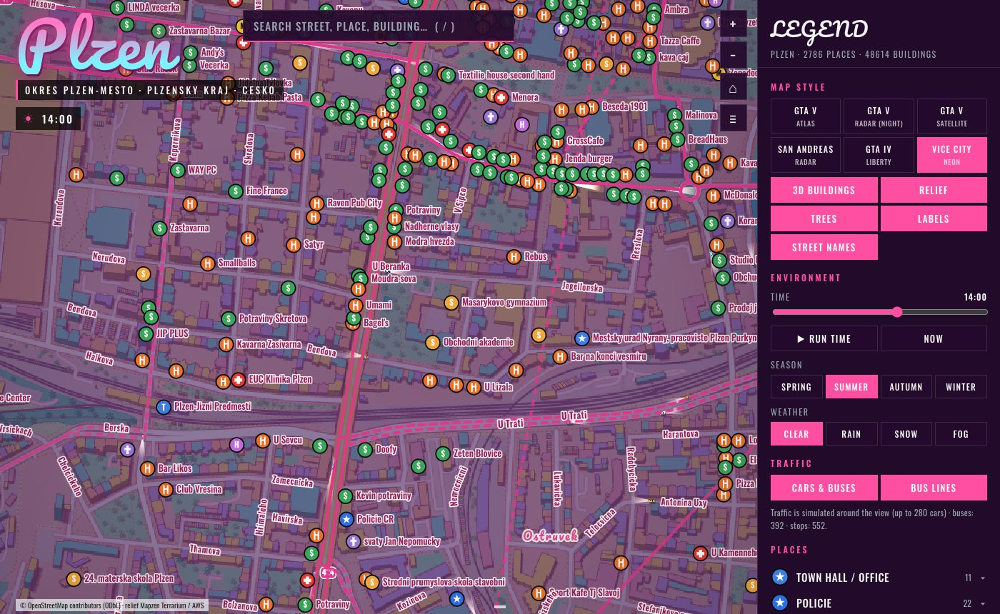
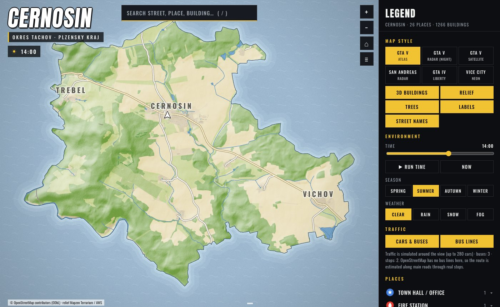
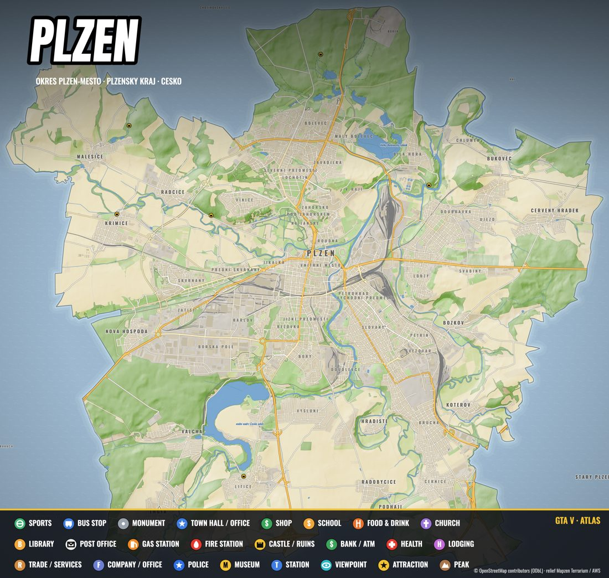
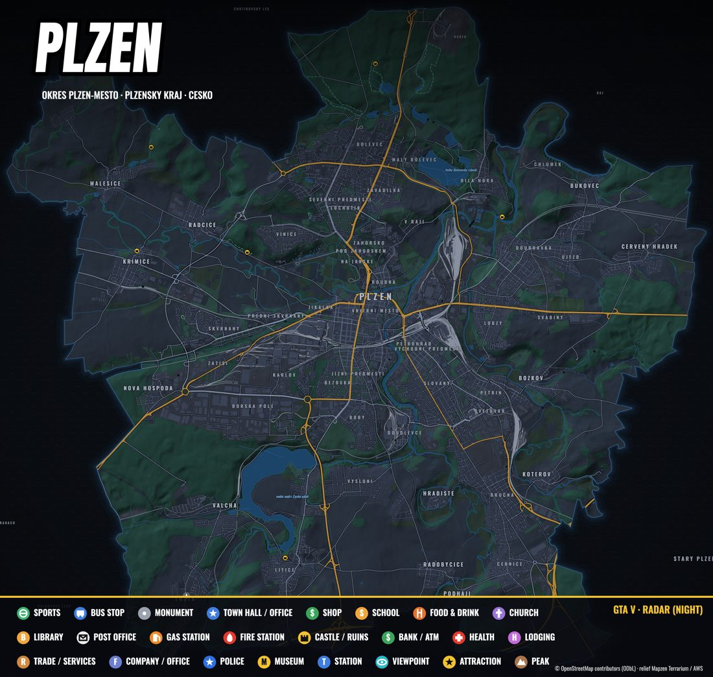
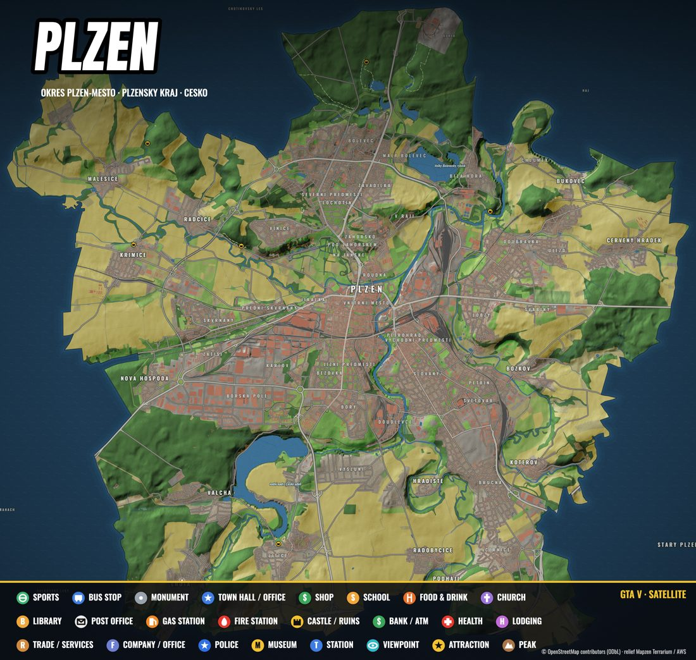
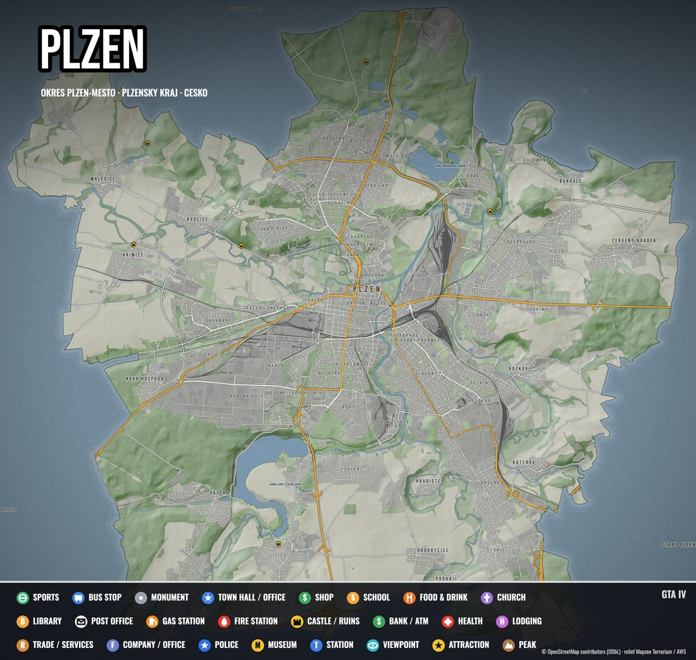
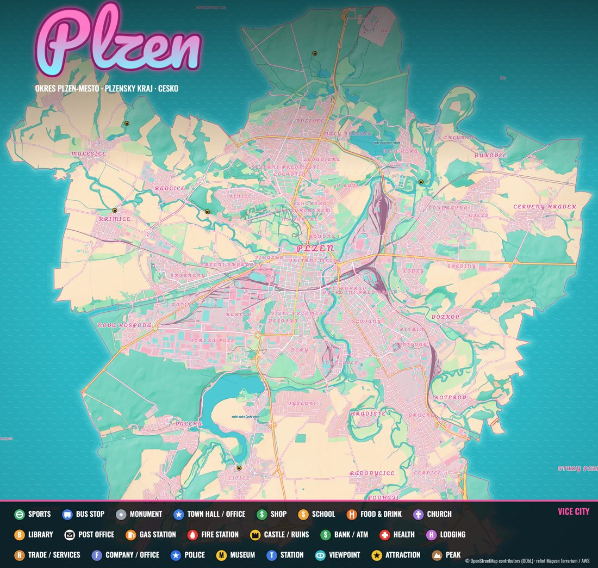
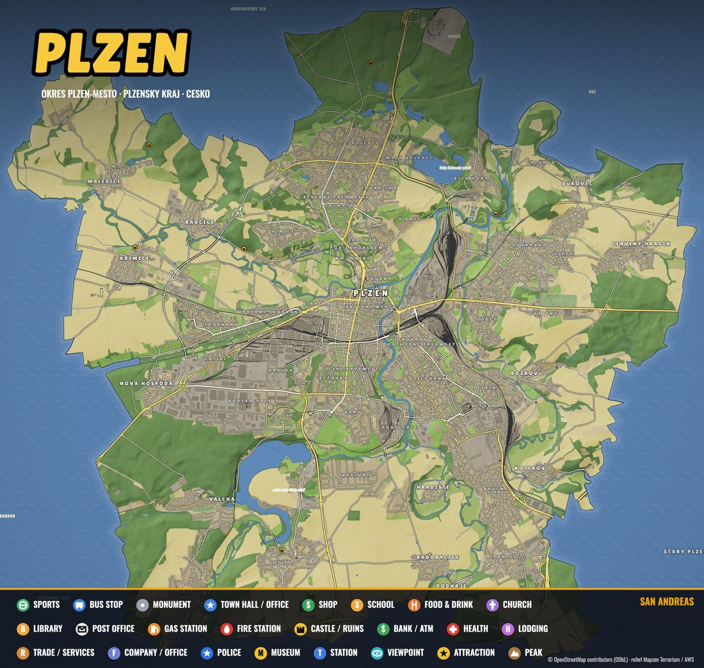

Your town. Rockstar style.
Type a town, get an interactive GTA-style map and a print-ready poster. Real streets, real buildings, real shop names, built from open data.

These are real townyg maps, generated from OpenStreetMap. Pan, zoom, search a street, switch the game style, time of day and weather. Click a building, double-click to get a GPS route.


The Plzen demo is a 22 MB download, so give it a moment. Make your own in two commands: brew tap metjum/townyg and townyg "Your town".
Six looks across four games, each with its own palette, fonts and effects. These are the posters of Plzen, rendered at 4096 px and ready for print.






A map you can open in any browser, not just a picture.
Follows the municipality boundary, not a square around the centre. Outside it is sea, like San Andreas.
Cars, taxis, police and buses that stop at real bus stops. Brake lights, parked cars, street lamps.
Businesses from OpenStreetMap show up as signs on the buildings, zoom in and read them.
Windows light up at night. Switch summer to winter, add rain, snow or fog.
Search streets and places, drop a waypoint and get a route like the in-game GPS.
Cached layers, spatial indexes and lazy trees keep it at 60 fps, even for a whole city.
macOS with Homebrew. Maps and posters are written to ~/Townyg.
# install $ brew tap metjum/townyg $ brew install townyg # interactive wizard $ townyg
# one town, no questions $ townyg "Plzeň" -y # only two styles, square area $ townyg "Tachov" --area square --radius 2 \ --styles gta5,vc --open
The first poster render installs headless Chromium once (about 150 MB). A big city needs a few minutes of downloading; unfinished runs resume from cache.
Nominatim locates the town and its administrative boundary.
Streets, buildings, land cover, water and places come from OpenStreetMap through Overpass, tile by tile and in parallel.
Terrain from AWS Terrarium tiles becomes a hillshade relief.
A canvas renderer draws the map in the chosen styles. Headless Chromium prints the posters.